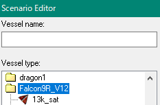

FALCON9 for Orbiter2016の操作
- Launch Control Panel （打ち上げコントロールパネル）
- Launch Control （打ち上げコントロール）
- Manual Jettison （手動で分離する）
- 1st Stage Flyback-EDL （第一段の自動着陸）
- Estimated ASDS/FRV Position （回収船の予測待機地点）
- Payload Management （ペイロードの管理）
- Target Orbit Parameters （目標軌道を設定）
- 1st Stg. Apogee at MECO （第一段の到達高度）
- キー操作一覧
- ペイロードを搭載する
- Star48BVキックモーター
Launch Control Panel （打ち上げコントロールパネル）
キーボードでKを押すと、Launch Control Panel（打ち上げコントロールパネル）のダイアログを開く。
Launch Control （打ち上げコントロール）
| T-10 Launch Autopilot | ON/OFFボタンをクリックすると、10秒後に自動で打ち上げを実行する。 |
| Launch Time UTC | UTCで打ち上げ時刻を設定する。 数字を入力してからSetをクリック。 On/Offをクリックすると設定した時刻に打ち上げられる。 |
| Hardback Gantry | 発射台の整備塔を立ち上げる／倒す。 |
Manual Jettison （手動で分離する）
| Jettison Fairings | フェアリングを分離する。 |
| Jettison 1st Stg. | 第一段を分離する。 |
1st Stage Flyback-EDL （第一段の自動着陸）
| Flyback Autopilot Status | 第一段の自動着陸を有効／無効にする。 |
| Flyback Target Name | 第一段の着陸目標を設定する。 |
| Flyback Mode | 逆噴射・弾道飛行・着陸を全自動で実行するか、最初の逆噴射を省略するか選択する。 |
| Flyback Fuel Reserve | 自動着陸のために、どれだけ燃料を残しておくか設定する。 |
Payload Management （ペイロードの管理）
| New Payload | 搭載したいペイロードの名前を入力して、Attachをクリック。 |
| Current Payload | 次に分離されるペイロードを表示する。 フェアリングを分離すると、ペイロードを放出できるようになる。 |
Target Orbit Parameters （目標軌道を設定）
| Inclination | 軌道傾斜角を設定する。 |
| Perigee / Apogee | 近地点・遠地点をそれぞれ設定する。 |
キー操作一覧
Falcon9（全体）
| K | 打ち上げコントロールパネルを開く |
| J | フェアリング・ペイロードを分離する※ |
| N | 第一段を分離する※ |
| V | 10秒後に打ち上げオートパイロットを実行 |
| E | カメラの向きを前後に切り替える |
| B | 第二段の燃料を排出する |
※オートパイロット実行中は自動で分離される
Falcon9（第一段）
打ち上げを実行して、第一段を分離したらF3キーを押す。
Falcon9_Stg1を選択してApplyをクリックすると、第一段を操作できる。※
※第二段はオートパイロットでそのまま軌道投入される
| K | 着陸目標を設定 |
| M | 逆噴射・弾道飛行・着陸を全自動で実行するか、最初の逆噴射を省略するか選択する |
| B | 自動着陸を有効／無効にする |
| P | 使用するエンジンを選択（9基・3基・1基） |
| J | グリッドフィンを展開 |
| G | 着陸脚を展開 |
| E | カメラの向きを前後に切り替える |
発射台
| G | 整備塔を倒す／立ち上げる |
| K | 夜間照明を点灯／消灯 |
| M | ウォーターカーテンをオン／オフ |
| V | LOX（液体酸素）の排出による霧を消す／霧を出す |
| B | (LC39A) クルーアクセスアームを展開／格納 |
| N | (LC39A) クルーアクセスアームを消す／出現させる |
| P | ロケットを発射台に設置する（発射台が空のとき） |
フェアリング
分離後、フェアリングは全自動で回収船 (FRV) に向かって飛行する。
| P | オートパイロットをオン／オフ |
ペイロードを搭載する
搭載できるのは、Attachment pointがある、つまりロボットアームで掴めるものに限られる。
空のシナリオを用意する
まず初めに、Falcon9に何も搭載されていない状態のシナリオを用意する。
Scenarios\Falcon9 for Orbiter2016フォルダを開く。
NROL76 launch(LC39A LZ1 flyback).scnをメモ帳などのテキストエディタで開く。
以下の行をすべて削除する。
10K_Sat:Falcon9R_V12/10k_sat
STATUS Landed Earth
POS -80.5771995 28.5619578
HEADING 23.64
ALT 0.952
AROT 57.776 -18.826 8.898
ATTACHED 0:0,Falcon9
AFCMODE 7
NAVFREQ 0 0
XPDR 500
END
ATTACHEDという行は、そのペイロードがほかの宇宙船に接続されていることを意味する。
数字が取り付け位置を示し、一番右に取り付け先の宇宙船の名前を記述する。
適当な名前を付けて保存する。※
※拡張子は.scn

ペイロードを追加する
作成したシナリオでゲームを開始する。
シナリオエディタを使って、ゲーム内で搭載したいペイロードを追加する。
シナリオエディタ 宇宙船の追加
Kを押して、Launch Control Panelを開く。
New Payloadで搭載したいペイロードの名前を入力して、Attachをクリック。
20まで連続して搭載することができる。
Jでペイロードを放出する。最後に搭載したペイロードから逆順で放出する。
Star48BVキックモーター
ペイロードとしてStar48BVキックモーターを追加できる。
また、Star48BVにさらにペイロードを搭載することも可能。
シナリオエディタを開いて、宇宙船の追加画面にする。
Falcon9R_V12フォルダを開いて、star48bvを選択して追加する。

Kを押して、Launch Control Panelを開く。
Falcon9にStar48を搭載する。
F3キーを押して、Star48に乗り換える。
この状態でPを押すと、Star48に別のペイロードを搭載することができる。
Jを押すと分離される。
注意：Star48は固体ロケットなので、一度点火すると燃焼終了までエンジンを消せない。